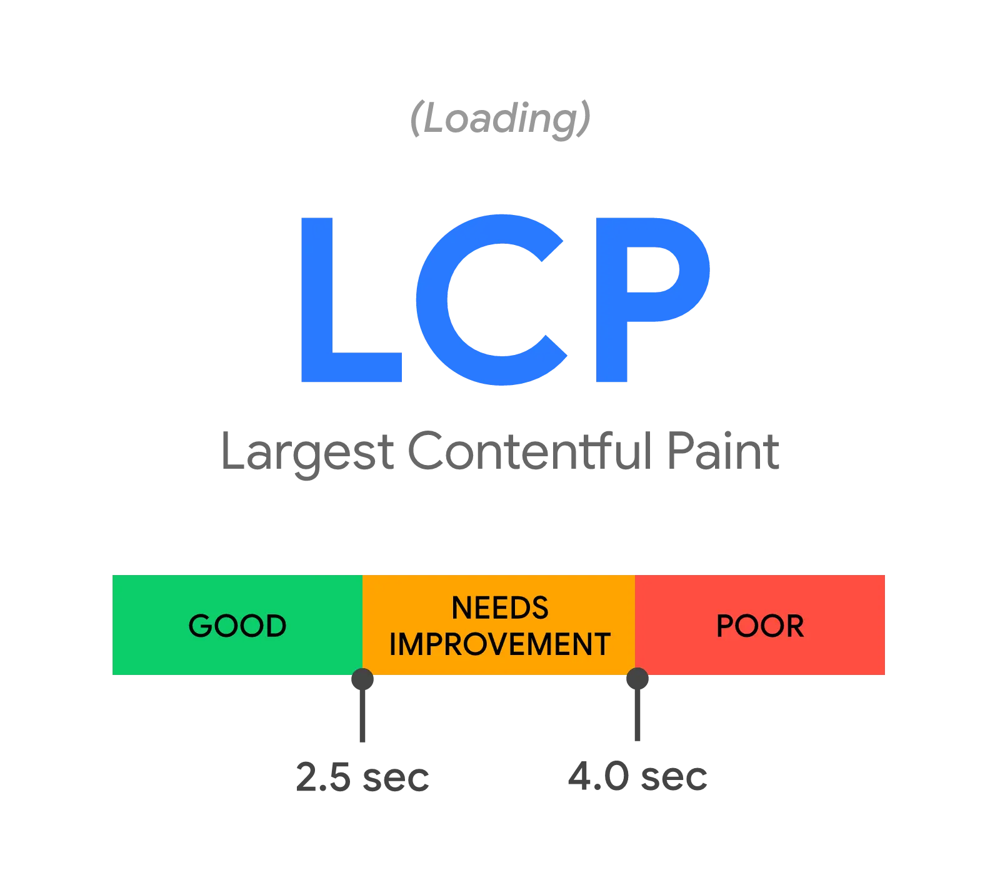

短答
Core Web Vitals 是三项分开的定义：加载、响应和视觉稳定。
最大内容绘制描述视口里的最大元素。交互到下次绘制描述输入到下一帧的延迟。累积布局偏移描述意外移动。Mika Visibility 可以把每一项当作 SEO 健康来讨论。它不会把它们加成一个总分。
定义
三项定义回答的是不同问题，所以稳定的布局并不描述主视觉有多快，快的主视觉也不描述筛选器是否灵敏。公开的区间图是为了让人能称呼区间，而不是为了测量某一家公司。它们不是对 Mika、某位客户或本营销站的测量。
健康检查里怎么使用这个定义
健康检查会为实际观察到的每一项定义列出模板、症状和一条样例 URL。
如果团队只有实验室轨迹，记录就应该写明那是实验室轨迹。如果证据只是别人文档里的截图，记录就不该假装那是本站的现场数据。SEO 健康记录检查了什么。它不会从一张图上借一个数字并称之为结果。

要检查什么
- 记录说的是三项定义中的哪一项
- 证据是实验室轨迹、现场描述，还是仅仅一张定义图
- 模板和一条样例 URL
- 三项定义没有被平均
- 没有编造总分
一个结构示例
经销商的分类模板布局是稳定的，主视觉却在等一张很大的渲染图。健康记录可以把布局和加载写成两行。合成一个体验等级会藏起该先修什么。蓝图可以指定先修主视觉文件，并把尚未回答的应用问题留在 GEO 轨道。
它不声称什么
点出这三项定义不保证排名或引用。
Mika Visibility 把它归到哪里
Mika Visibility 把它归在 SEO 健康：线上站点在技术上是否准备好被发现和理解。SEO 增长仍是关于覆盖和意图的另一个问题。GEO 健康与 GEO 增长保持各自的尺度。一条加载或响应性记录不会自动变成增长分数，也没有混合总分。
本页的图把定义并排放置，是为了让读者看到它们不是同一个旋钮。
常见问题
本页所说的 Core Web Vitals 是什么？
Core Web Vitals 是三项分开的定义：加载、响应和视觉稳定。
健康检查应如何记录它们？
健康检查会为实际观察到的每一项定义列出模板、症状和一条样例 URL。
这些定义能保证排名吗？
点出这三项定义不保证排名或引用。
下一步
做一次结构化的 SEO + GEO 审计，查看健康发现、增长缺口和可以执行的蓝图。
更清晰的实体、答案、证据和上下文，会让页面更容易被理解与引用。任何回答产品中的结果都不作保证。